Co nowego
Zmiany w ostatnich wersjach Pit Wall Crew.
Wersja 0.4.4.13 (20.11.2026)
NOWENakładka OBS dla streamerów: pasek i karty z danymi auta po pytaniu kierowcy albo komendzie widza z czatu YouTube („!pwc opony”).

NOWELista komend dla widzów co 10 minut sama pokazuje się na ekranie; pasek można przesunąć pod lusterko wirtualne.
NOWEStrona „Nakładka OBS” w oknie i opis komend dla widzów w 7 językach.
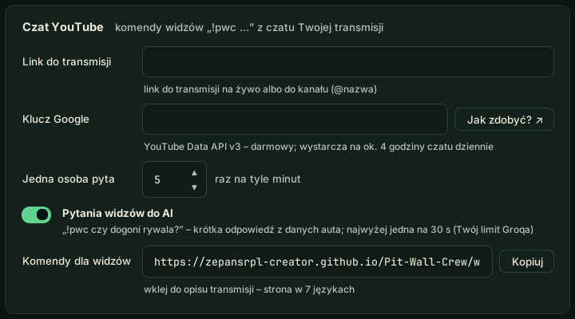
NOWELimity toru z podziałem na kierowców auta (głosem i na nakładce, „!pwc limity”): kto dostał karę i ile zbiera teraz.

POPRAWKAPit wall, plan stintów: na liście kierowców w każdym stincie są wszyscy z planu, nie tylko zapisani w zakładce Zespół.
Wersja 0.4.4.12 (20.11.2026)
POPRAWKAMapka toru w raporcie: szykany (np. pierwsza na Monzy) mają prawdziwy kształt po jednym czystym okrążeniu.
Wersja 0.4.4.11 (20.11.2026)
NOWEFunkcje eksperymentalne (testerzy): karta „Test setupu” – A/B z poprawką na paliwo i opony, zakręty, zużycie opon, balans; głosem „testuję nowy setup”.

POPRAWKAInżynier rozumie więcej pytań, także w innych językach: „ile do trzeciego?”, „limity toru?”, „co z fast bump?”, „ustaw 15 litrów”, „czy mnie słyszysz?”.
POPRAWKAGdy inżynier nie zrozumie pytania, mówi to w języku kierowcy.
POPRAWKA„Pilnuj …” na treningu i w kwalifikacjach porównuje ostatnie okrążenia.
POPRAWKA„Jak opony?” po pitstopie mówi tylko o nowych oponach.
POPRAWKAOcena zmiany po radzie o tarkach i dobijaniu jest konkretna.
POPRAWKAMonza: numery zakrętów jak na mapie w kokpicie; łuk w pełnym gazie nie jest zakrętem.
POPRAWKAPytania o raport z jazdy: inżynier zna też hamulce i ciśnienia opon.
POPRAWKAPit wall: poprawki z przeglądu kodu (dopisywanie kierowców, mapa toru, eksport CSV).
Wersja 0.4.4.10 (16.11.2026)
POPRAWKAPorsche 911 GT3 R (LMU): rady do amortyzatorów w dobrą stronę – 1 to najtwardsze, 18 najmiększe.
Wersja 0.4.4.9 (16.11.2026)
NOWEGłośność głosem: „głośniej” / „ciszej” i „spotter głośniej” / „spotter ciszej”; osobny suwak głośności spottera.

POPRAWKAAssetto Corsa: rada o ciśnieniu mówi, które koło (lewa / prawa), gdy się różnią.
Wersja 0.4.4.8 (15.11.2026)
POPRAWKAAssetto Corsa: mapka toru w raporcie z jazdy znów się pokazuje.
Wersja 0.4.4.7 (15.11.2026)
NOWERaport z jazdy, karta „Paliwo” / „Energia”: także najwięcej zużyte na jednym okrążeniu (przy energii też paliwo).

POPRAWKAPasek bez tekstu pod „Komunikaty” po pierwszym starcie nowej wersji.
Wersja 0.4.4.6 (15.11.2026)
POPRAWKAOkno nie zacina się już na chwilę przy sprawdzaniu aktualizacji po uruchomieniu.
POPRAWKAPolecenia postoju: „ciśnienie przód, o 2 w dół” z przecinkiem, poprawka w zdaniu („albo nie, lewe”) i „zatankuj do połowy”.
Wersja 0.4.4.5 (15.11.2026)
NOWEOkno: gładkie, zaokrąglone krawędzie kart, przycisków, plakietek i przełączników.
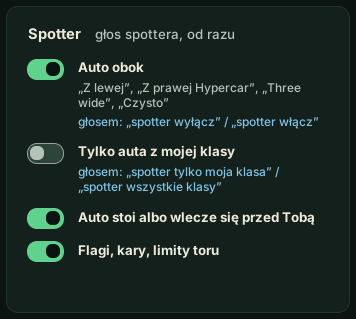
NOWEGłos z emocjami: dobre wiadomości (najlepsze okrążenie, zyskana pozycja, podium) żywiej, pilne komunikaty szybciej i głośniej.
POPRAWKAOkno: nie zacina się na chwilę przy uruchamianiu inżyniera.
POPRAWKARaport z jazdy: pozostałe karty (opony, energia, nagłówki, „Na następny stint”) też rysowane jako jeden element – raport ok. 3 razy lżejszy.
Wersja 0.4.4.4 (15.11.2026)
POPRAWKAOkno: szybszy start – strony pomocy budują się dopiero przy pierwszym otwarciu.
POPRAWKARaport z jazdy: lista zakrętów, „Popraw w jeździe” i kafelki rysowane jako jeden element – szybsze przewijanie, wybór raportu i zmiana rozmiaru okna.
What's new
Changes in the latest Pit Wall Crew versions.
Version 0.4.4.13 (20.11.2026)
NEWOBS overlay for streamers: a bar and car data cards after the driver's question or a viewer command from the YouTube chat (“!pwc tyres”).

NEWThe viewer command list shows on screen every 10 minutes; the bar can be moved below the virtual mirror.
NEW“OBS overlay” page in the app and a viewer command guide in 7 languages.

NEWTrack limits split by the car's drivers (by voice and on the overlay, “!pwc limits”): who got a penalty and who is collecting now.

FIXPit wall, stint plan: every stint's driver list has everyone from the plan, not only those saved in the Team tab.
Version 0.4.4.12 (20.11.2026)
FIXTrack map in the report: chicanes (e.g. the first one at Monza) get their real shape after one clean lap.
Version 0.4.4.11 (20.11.2026)
NEWExperimental features (testers): “Setup test” card – A/B corrected for fuel and tyres, corners, tyre wear, balance; by voice “I'm testing a new setup”.

FIXThe engineer understands more questions, in other languages too: “how far is third?”, “track limits?”, “what about fast bump?”, “set 15 litres”, “can you hear me?”.
FIXWhen the engineer doesn't understand a question, he says so in the driver's language.
FIX“Watch …” in practice and qualifying compares last laps.
FIX“How are the tyres?” after a pitstop talks only about the new tyres.
FIXThe verdict on a change after kerb and bottoming advice is specific.
FIXMonza: corner numbers match the cockpit map; a bend taken flat out is not a corner.
FIXDriving report questions: the engineer also knows brakes and tyre pressures.
FIXPit Wall: fixes from the code review (adding drivers, track map, CSV export).
Version 0.4.4.10 (16.11.2026)
FIXPorsche 911 GT3 R (LMU): damper advice goes the right way – 1 is the stiffest, 18 the softest.
Version 0.4.4.9 (16.11.2026)
NEWVolume by voice: “louder” / “quieter” and “spotter louder” / “spotter quieter”; a separate spotter volume slider.

FIXAssetto Corsa: pressure advice says which wheel (left / right) when they differ.
Version 0.4.4.8 (15.11.2026)
FIXAssetto Corsa: the track map in the driving report shows again.
Version 0.4.4.7 (15.11.2026)
NEWDriving report, “Fuel” / “Energy” card: also the most used on a single lap (with energy, fuel too).

FIXBlank bar under “Messages” on the first start of a new version.
Version 0.4.4.6 (15.11.2026)
FIXThe window no longer freezes briefly while checking for updates at startup.
FIXPit commands: “front pressure, 2 down” with a comma, correcting yourself mid-sentence (“no wait, left”) and “refuel to half”.
Version 0.4.4.5 (15.11.2026)
NEWWindow: smooth, rounded edges on cards, buttons, badges and switches.

NEWVoice with emotion: good news (best lap, position gained, podium) sounds livelier, urgent calls faster and louder.
FIXWindow: no longer freezes for a moment when the engineer starts.
FIXDriving report: the remaining cards (tyres, energy, headers, “For the next stint”) also drawn as one element – the report is about 3 times lighter.
Version 0.4.4.4 (15.11.2026)
FIXWindow: faster start – help pages are built only when first opened.
FIXDriving report: corner list, “Improve in your driving” and tiles drawn as one element – faster scrolling, report selection and window resizing.
Was ist neu
Änderungen in den letzten Versionen von Pit Wall Crew.
Version 0.4.4.13 (20.11.2026)
NEUOBS-Overlay für Streamer: Leiste und Karten mit Autodaten nach der Frage des Fahrers oder einem Zuschauerbefehl aus dem YouTube-Chat („!pwc reifen“).

NEUDie Zuschauerbefehle erscheinen alle 10 Minuten auf dem Bildschirm; die Leiste lässt sich unter den virtuellen Spiegel schieben.
NEUSeite „OBS-Overlay“ in der App und Befehlsübersicht für Zuschauer in 7 Sprachen.

NEUTrack Limits nach Fahrern des Autos (per Stimme und im Overlay, „!pwc limits“): wer eine Strafe bekam und wer jetzt sammelt.

KORREKTURPit wall, Stintplan: Die Fahrerliste jedes Stints enthält alle aus dem Plan, nicht nur die im Tab Team gespeicherten.
Version 0.4.4.12 (20.11.2026)
KORREKTURStreckenkarte im Bericht: Schikanen (z. B. die erste in Monza) haben nach einer sauberen Runde ihre echte Form.
Version 0.4.4.11 (20.11.2026)
NEUExperimentelle Funktionen (Tester): Karte „Setup-Test“ – A/B bereinigt um Kraftstoff und Reifen, Kurven, Reifenverschleiß, Balance; per Stimme „ich teste ein neues Setup“.

KORREKTURDer Ingenieur versteht mehr Fragen, auch in anderen Sprachen: „wie weit ist der Dritte?“, „Track Limits?“, „was ist mit Fast Bump?“, „15 Liter einstellen“, „hörst du mich?“.
KORREKTURVersteht der Ingenieur eine Frage nicht, sagt er es in der Sprache des Fahrers.
KORREKTUR„Beobachte …“ in Training und Qualifying vergleicht die letzten Runden.
KORREKTUR„Wie sind die Reifen?“ nach dem Boxenstopp spricht nur über die neuen Reifen.
KORREKTURDie Bewertung einer Änderung nach dem Rat zu Randsteinen und Aufsetzen ist konkret.
KORREKTURMonza: Kurvennummern wie auf der Cockpit-Karte; ein Bogen mit Vollgas ist keine Kurve.
KORREKTURFragen zum Fahrbericht: Der Ingenieur kennt auch Bremsen und Reifendrücke.
KORREKTURPit Wall: Korrekturen aus dem Code-Review (Fahrer hinzufügen, Streckenkarte, CSV-Export).
Version 0.4.4.10 (16.11.2026)
KORREKTURPorsche 911 GT3 R (LMU): Dämpfer-Tipps in die richtige Richtung – 1 ist am härtesten, 18 am weichsten.
Version 0.4.4.9 (16.11.2026)
NEULautstärke per Stimme: „lauter“ / „leiser“ und „Spotter lauter“ / „Spotter leiser“; eigener Lautstärkeregler für den Spotter.

KORREKTURAssetto Corsa: Druckhinweis nennt das Rad (links / rechts), wenn sie sich unterscheiden.
Version 0.4.4.8 (15.11.2026)
KORREKTURAssetto Corsa: Die Streckenkarte im Fahrbericht wird wieder angezeigt.
Version 0.4.4.7 (15.11.2026)
NEUFahrbericht, Karte „Kraftstoff“ / „Energie“: auch der höchste Verbrauch auf einer Runde (bei Energie auch Kraftstoff).

KORREKTURLeerer Balken unter „Meldungen“ beim ersten Start einer neuen Version.
Version 0.4.4.6 (15.11.2026)
KORREKTURDas Fenster hängt beim Prüfen auf Updates nach dem Start nicht mehr kurz.
KORREKTURBoxenbefehle: „Druck vorne, 2 runter“ mit Komma, Korrektur im Satz („ich meine links“) und „bis zur Hälfte tanken“.
Version 0.4.4.5 (15.11.2026)
NEUFenster: glatte, abgerundete Kanten bei Karten, Schaltflächen, Plaketten und Schaltern.

NEUStimme mit Emotion: gute Nachrichten (beste Runde, gewonnene Position, Podium) lebhafter, dringende Meldungen schneller und lauter.
KORREKTURFenster: friert beim Start des Ingenieurs nicht mehr kurz ein.
KORREKTURFahrbericht: auch die übrigen Karten (Reifen, Energie, Überschriften, „Für den nächsten Stint“) als ein Element gezeichnet – der Bericht ist etwa 3-mal leichter.
Version 0.4.4.4 (15.11.2026)
KORREKTURFenster: schnellerer Start – Hilfeseiten werden erst beim ersten Öffnen aufgebaut.
KORREKTURFahrbericht: Kurvenliste, „Beim Fahren verbessern“ und Kacheln als ein Element gezeichnet – schnelleres Scrollen, Berichtsauswahl und Ändern der Fenstergröße.
Nouveautés
Changements des dernières versions de Pit Wall Crew.
Version 0.4.4.13 (20.11.2026)
NOUVEAUOverlay OBS pour les streamers : barre et cartes avec les données de la voiture après la question du pilote ou une commande du chat YouTube (« !pwc pneus »).

NOUVEAULa liste des commandes s'affiche toutes les 10 minutes ; la barre peut descendre sous le rétroviseur virtuel.
NOUVEAUPage « Overlay OBS » dans l'application et guide des commandes pour les spectateurs en 7 langues.
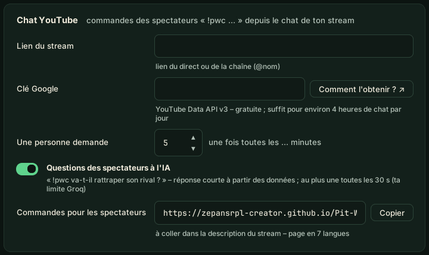
NOUVEAULimites de piste par pilote de la voiture (à la voix et sur l'overlay, « !pwc limites ») : qui a eu une pénalité et qui en accumule.

CORRECTIONPit wall, plan des relais : la liste des pilotes de chaque relais contient tous ceux du plan, pas seulement ceux de l'onglet Équipe.
Version 0.4.4.12 (20.11.2026)
CORRECTIONCarte du circuit dans le rapport : les chicanes (p. ex. la première à Monza) ont leur vraie forme après un tour propre.
Version 0.4.4.11 (20.11.2026)
NOUVEAUFonctions expérimentales (testeurs) : carte « Test de setup » – A/B corrigé du carburant et des pneus, virages, usure des pneus, équilibre ; à la voix « je teste un nouveau setup ».

CORRECTIONL'ingénieur comprend plus de questions, aussi dans d'autres langues : « à combien est le troisième ? », « limites de piste ? », « et le fast bump ? », « mets 15 litres », « tu m'entends ? ».
CORRECTIONQuand l'ingénieur ne comprend pas une question, il le dit dans la langue du pilote.
CORRECTION« Surveille … » en essais et en qualifications compare les derniers tours.
CORRECTION« Comment sont les pneus ? » après un pitstop ne parle que des nouveaux pneus.
CORRECTIONL'avis sur un changement après le conseil sur les vibreurs et le talonnage est précis.
CORRECTIONMonza : numéros de virages comme sur la carte du cockpit ; une courbe à fond n'est pas un virage.
CORRECTIONQuestions sur le rapport de conduite : l'ingénieur connaît aussi les freins et les pressions des pneus.
CORRECTIONPit wall : corrections issues de la revue de code (ajout de pilotes, carte du circuit, export CSV).
Version 0.4.4.10 (16.11.2026)
CORRECTIONPorsche 911 GT3 R (LMU) : conseils d’amortisseurs dans le bon sens – 1 est le plus dur, 18 le plus souple.
Version 0.4.4.9 (16.11.2026)
NOUVEAUVolume à la voix : « plus fort » / « moins fort » et « spotter plus fort » / « spotter moins fort » ; curseur de volume séparé pour le spotter.

CORRECTIONAssetto Corsa : le conseil de pression précise la roue (gauche / droite) quand elles diffèrent.
Version 0.4.4.8 (15.11.2026)
CORRECTIONAssetto Corsa : la carte du circuit s'affiche à nouveau dans le rapport de conduite.
Version 0.4.4.7 (15.11.2026)
NOUVEAURapport de conduite, carte « Carburant » / « Énergie » : aussi le maximum utilisé sur un tour (avec l'énergie, le carburant aussi).

CORRECTIONBarre vide sous « Messages » au premier lancement d'une nouvelle version.
Version 0.4.4.6 (15.11.2026)
CORRECTIONLa fenêtre ne se fige plus un instant pendant la recherche de mises à jour au démarrage.
CORRECTIONCommandes d'arrêt : « pression avant, 2 en moins » avec virgule, correction en cours de phrase (« non, gauches ») et « plein à moitié ».
Version 0.4.4.5 (15.11.2026)
NOUVEAUFenêtre : bords lisses et arrondis pour les cartes, boutons, badges et interrupteurs.
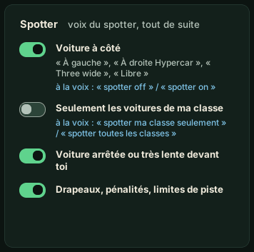
NOUVEAUVoix avec émotion : bonnes nouvelles (meilleur tour, place gagnée, podium) plus vivantes, messages urgents plus rapides et plus forts.
CORRECTIONFenêtre : ne se fige plus un instant au démarrage de l'ingénieur.
CORRECTIONRapport de conduite : les autres cartes (pneus, énergie, en-têtes, « Pour le prochain relais ») aussi dessinées en un seul élément – rapport environ 3 fois plus léger.
Version 0.4.4.4 (15.11.2026)
CORRECTIONFenêtre : démarrage plus rapide – les pages d’aide ne sont construites qu’à la première ouverture.
CORRECTIONRapport de conduite : liste des virages, « À améliorer au pilotage » et tuiles dessinés en un seul élément – défilement, choix du rapport et redimensionnement plus rapides.
Novedades
Cambios en las últimas versiones de Pit Wall Crew.
Versión 0.4.4.13 (20.11.2026)
NUEVOSuperposición OBS para streamers: barra y tarjetas con datos del coche tras la pregunta del piloto o un comando del chat de YouTube («!pwc neumáticos»).
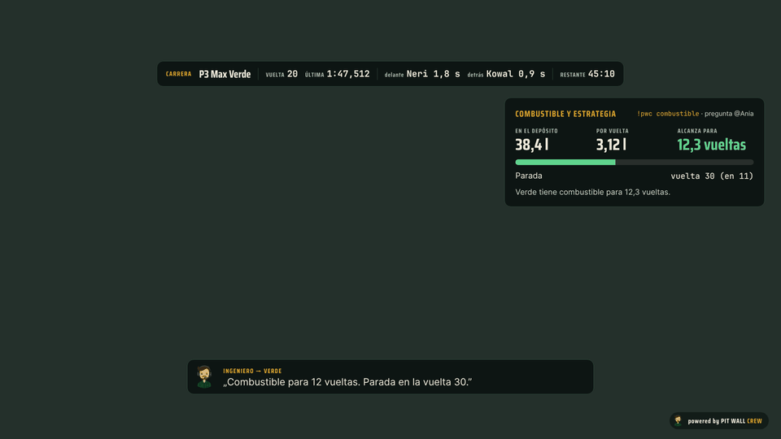
NUEVOLa lista de comandos aparece en pantalla cada 10 minutos; la barra se puede bajar bajo el retrovisor virtual.
NUEVOPágina «Superposición OBS» en la aplicación y guía de comandos para espectadores en 7 idiomas.
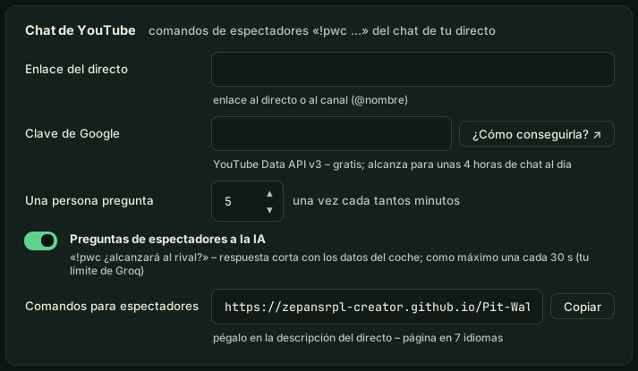
NUEVOLímites de pista por piloto del coche (por voz y en la superposición, «!pwc límites»): quién fue sancionado y quién acumula ahora.

CORRECCIÓNPit wall, plan de stints: la lista de pilotos de cada stint incluye a todos los del plan, no solo a los guardados en Equipo.
Versión 0.4.4.12 (20.11.2026)
CORRECCIÓNMapa del circuito en el informe: las chicanes (p. ej. la primera de Monza) tienen su forma real tras una vuelta limpia.
Versión 0.4.4.11 (20.11.2026)
NUEVOFunciones experimentales (testers): tarjeta «Prueba de setup» – A/B corregido por combustible y neumáticos, curvas, desgaste, balance; por voz «estoy probando un setup nuevo».

CORRECCIÓNEl ingeniero entiende más preguntas, también en otros idiomas: «¿a cuánto está el tercero?», «¿límites de pista?», «¿y el fast bump?», «pon 15 litros», «¿me oyes?».
CORRECCIÓNCuando el ingeniero no entiende una pregunta, lo dice en el idioma del piloto.
CORRECCIÓN«Vigila a …» en libres y clasificación compara las últimas vueltas.
CORRECCIÓN«¿Cómo van los neumáticos?» tras un pitstop habla solo de los neumáticos nuevos.
CORRECCIÓNLa valoración de un cambio tras el consejo sobre pianos y golpes contra el suelo es concreta.
CORRECCIÓNMonza: números de curva como en el mapa de la cabina; una curva a fondo no es una curva.
CORRECCIÓNPreguntas sobre el informe de conducción: el ingeniero también conoce los frenos y las presiones.
CORRECCIÓNPit wall: correcciones de la revisión de código (añadir pilotos, mapa del circuito, exportación CSV).
Versión 0.4.4.10 (16.11.2026)
CORRECCIÓNPorsche 911 GT3 R (LMU): consejos de amortiguadores en la dirección correcta – 1 es el más duro, 18 el más blando.
Versión 0.4.4.9 (16.11.2026)
NUEVOVolumen por voz: «más alto» / «más bajo» y «spotter más alto» / «spotter más bajo»; control de volumen propio del spotter.
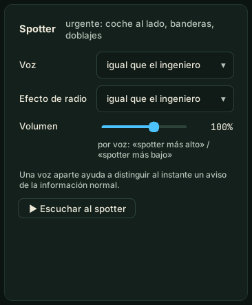
CORRECCIÓNAssetto Corsa: el consejo de presión indica la rueda (izquierda / derecha) cuando difieren.
Versión 0.4.4.8 (15.11.2026)
CORRECCIÓNAssetto Corsa: el mapa del circuito vuelve a verse en el informe de conducción.
Versión 0.4.4.7 (15.11.2026)
NUEVOInforme de conducción, tarjeta «Combustible» / «Energía»: también lo máximo gastado en una vuelta (con energía, también el combustible).

CORRECCIÓNBarra vacía bajo «Mensajes» en el primer inicio de una versión nueva.
Versión 0.4.4.6 (15.11.2026)
CORRECCIÓNLa ventana ya no se congela un momento al buscar actualizaciones al iniciar.
CORRECCIÓNÓrdenes de parada: «presión delante, 2 abajo» con coma, corregirse en la frase («no, izquierdos») y «reposta hasta la mitad».
Versión 0.4.4.5 (15.11.2026)
NUEVOVentana: bordes suaves y redondeados en tarjetas, botones, etiquetas e interruptores.

NUEVOVoz con emoción: buenas noticias (mejor vuelta, posición ganada, podio) más animadas, avisos urgentes más rápidos y fuertes.
CORRECCIÓNVentana: ya no se congela un momento al iniciar el ingeniero.
CORRECCIÓNInforme de conducción: las demás tarjetas (neumáticos, energía, encabezados, «Para el próximo stint») también dibujadas como un solo elemento – el informe es unas 3 veces más ligero.
Versión 0.4.4.4 (15.11.2026)
CORRECCIÓNVentana: arranque más rápido – las páginas de ayuda se crean solo al abrirlas por primera vez.
CORRECCIÓNInforme de conducción: lista de curvas, «Mejora en la conducción» y mosaicos dibujados como un solo elemento – desplazamiento, elección del informe y cambio de tamaño más rápidos.
Novità
Modifiche nelle ultime versioni di Pit Wall Crew.
Versione 0.4.4.13 (20.11.2026)
NUOVOOverlay OBS per gli streamer: barra e schede con i dati dell'auto dopo la domanda del pilota o un comando dalla chat di YouTube («!pwc gomme»).
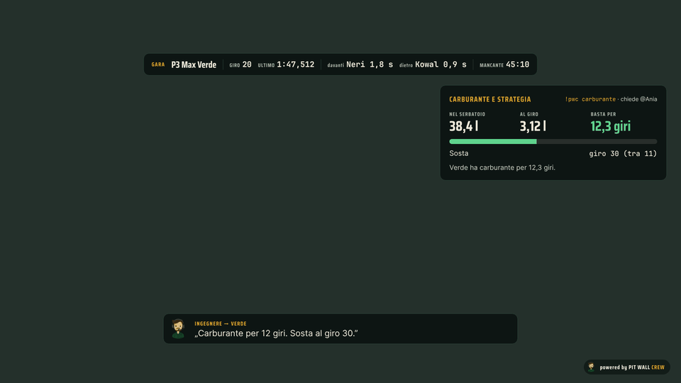
NUOVOL'elenco dei comandi compare ogni 10 minuti; la barra si può spostare sotto lo specchietto virtuale.
NUOVOPagina «Overlay OBS» nell'app e guida ai comandi per gli spettatori in 7 lingue.
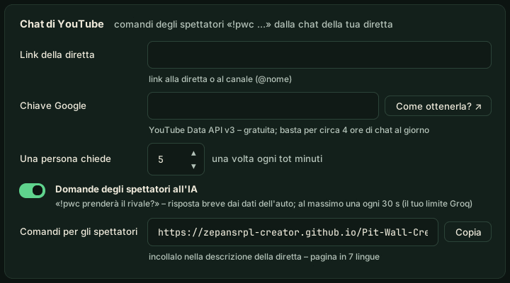
NUOVOLimiti della pista per pilota dell'auto (a voce e sull'overlay, «!pwc limiti»): chi ha preso una penalità e chi ne accumula ora.

CORREZIONEPit wall, piano degli stint: l'elenco piloti di ogni stint ha tutti quelli del piano, non solo quelli salvati in Squadra.
Versione 0.4.4.12 (20.11.2026)
CORREZIONEMappa della pista nel rapporto: le chicane (es. la prima di Monza) hanno la forma reale dopo un giro pulito.
Versione 0.4.4.11 (20.11.2026)
NUOVOFunzioni sperimentali (tester): scheda «Test setup» – A/B corretto per carburante e gomme, curve, usura gomme, bilanciamento; a voce «sto provando un nuovo setup».

CORREZIONEL'ingegnere capisce più domande, anche in altre lingue: «quanto manca al terzo?», «limiti della pista?», «e il fast bump?», «metti 15 litri», «mi senti?».
CORREZIONEQuando l'ingegnere non capisce una domanda, lo dice nella lingua del pilota.
CORREZIONE«Controlla …» in prove e qualifiche confronta gli ultimi giri.
CORREZIONE«Come sono le gomme?» dopo un pitstop parla solo delle gomme nuove.
CORREZIONEIl giudizio su una modifica dopo il consiglio su cordoli e talonamento è concreto.
CORREZIONEMonza: numeri delle curve come sulla mappa nell'abitacolo; una curva in pieno non è una curva.
CORREZIONEDomande sul rapporto di guida: l'ingegnere conosce anche freni e pressioni delle gomme.
CORREZIONEPit wall: correzioni dalla revisione del codice (aggiunta piloti, mappa della pista, esportazione CSV).
Versione 0.4.4.10 (16.11.2026)
CORREZIONEPorsche 911 GT3 R (LMU): consigli sugli ammortizzatori nel verso giusto – 1 è il più rigido, 18 il più morbido.
Versione 0.4.4.9 (16.11.2026)
NUOVOVolume a voce: «più forte» / «più piano» e «spotter più forte» / «spotter più piano»; cursore del volume separato per lo spotter.

CORREZIONEAssetto Corsa: il consiglio sulla pressione indica la ruota (sinistra / destra) quando sono diverse.
Versione 0.4.4.8 (15.11.2026)
CORREZIONEAssetto Corsa: la mappa del circuito torna a vedersi nel rapporto di guida.
Versione 0.4.4.7 (15.11.2026)
NUOVORapporto di guida, scheda «Carburante» / «Energia»: anche il massimo consumato in un giro (con l'energia, anche il carburante).

CORREZIONEBarra vuota sotto «Messaggi» al primo avvio di una nuova versione.
Versione 0.4.4.6 (15.11.2026)
CORREZIONELa finestra non si blocca più per un attimo durante il controllo degli aggiornamenti all'avvio.
CORREZIONEComandi della sosta: «pressione davanti, 2 giù» con la virgola, correggersi nella frase («no, sinistre») e «rifornisci a metà».
Versione 0.4.4.5 (15.11.2026)
NUOVOFinestra: bordi lisci e arrotondati per schede, pulsanti, etichette e interruttori.

NUOVOVoce con emozione: buone notizie (giro migliore, posizione guadagnata, podio) più vivaci, messaggi urgenti più veloci e forti.
CORREZIONEFinestra: non si blocca più per un attimo all'avvio dell'ingegnere.
CORREZIONEReport di guida: anche le altre schede (gomme, energia, intestazioni, «Per il prossimo stint») disegnate come un unico elemento – il report è circa 3 volte più leggero.
Versione 0.4.4.4 (15.11.2026)
CORREZIONEFinestra: avvio più rapido – le pagine di aiuto vengono create solo alla prima apertura.
CORREZIONEReport di guida: elenco curve, «Migliora nella guida» e riquadri disegnati come un unico elemento – scorrimento, scelta del report e ridimensionamento più veloci.
Nyheder
Ændringer i de seneste versioner af Pit Wall Crew.
Version 0.4.4.13 (20.11.2026)
NYOBS-overlay til streamere: bjælke og kort med bildata efter kørerens spørgsmål eller en seerkommando fra YouTube-chatten („!pwc dæk“).
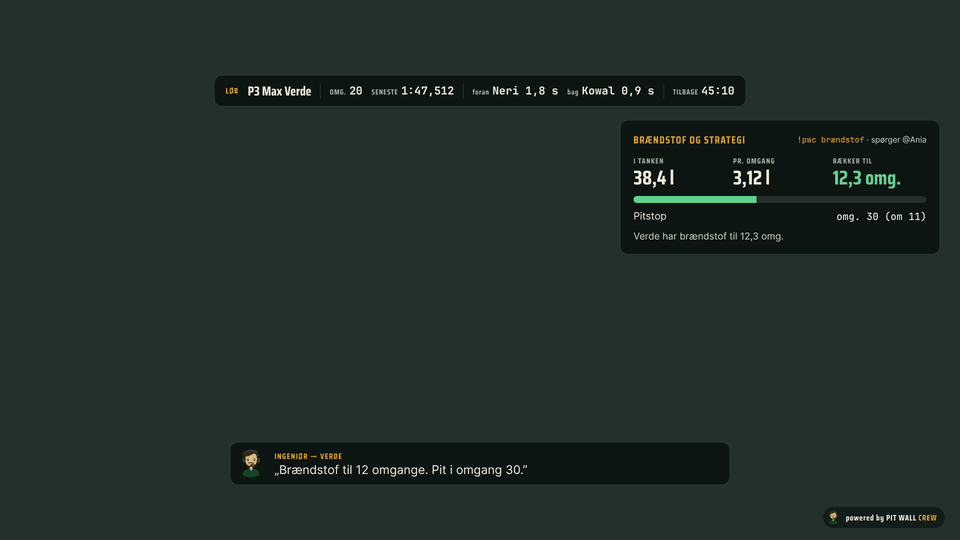
NYSeerkommandoerne vises på skærmen hvert 10. minut; bjælken kan flyttes ned under det virtuelle spejl.
NYSiden „OBS-overlay“ i appen og en kommandoguide til seerne på 7 sprog.

NYBanegrænser fordelt på bilens kørere (med stemmen og på overlayet, »!pwc grænser«): hvem fik straf, og hvem samler nu.

RETTELSEPit wall, stintplan: kørerlisten i hvert stint har alle fra planen, ikke kun dem, der er gemt under Hold.
Version 0.4.4.12 (20.11.2026)
RETTELSEBanekort i rapporten: chikaner (f.eks. den første i Monza) får deres rigtige form efter én ren omgang.
Version 0.4.4.11 (20.11.2026)
NYEksperimentelle funktioner (testere): kortet „Setuptest“ – A/B korrigeret for brændstof og dæk, sving, dækslid, balance; med stemmen „jeg tester et nyt setup“.

RETTELSEIngeniøren forstår flere spørgsmål, også på andre sprog: „hvor langt er der til tredje?“, „track limits?“, „hvad med fast bump?“, „sæt 15 liter“, „kan du høre mig?“.
RETTELSENår ingeniøren ikke forstår et spørgsmål, siger han det på kørerens sprog.
RETTELSE„Hold øje med …“ i træning og kvalifikation sammenligner de seneste omgange.
RETTELSE„Hvordan er dækkene?“ efter et pitstop taler kun om de nye dæk.
RETTELSEVurderingen af en ændring efter rådet om kantsten og bundslag er konkret.
RETTELSEMonza: svingnumre som på kortet i cockpittet; en bue taget for fuld gas er ikke et sving.
RETTELSESpørgsmål om kørselsrapporten: ingeniøren kender også bremser og dæktryk.
RETTELSEPit wall: rettelser fra kodegennemgangen (tilføjelse af kørere, banekort, CSV-eksport).
Version 0.4.4.10 (16.11.2026)
RETTELSEPorsche 911 GT3 R (LMU): dæmperråd i den rigtige retning – 1 er hårdest, 18 blødest.
Version 0.4.4.9 (16.11.2026)
NYLydstyrke med stemmen: »højere« / »lavere« og »spotter højere« / »spotter lavere«; egen lydstyrkeskyder til spotteren.

RETTELSEAssetto Corsa: trykrådet siger hvilket hjul (venstre / højre), når de er forskellige.
Version 0.4.4.8 (15.11.2026)
RETTELSEAssetto Corsa: Banekortet i kørselsrapporten vises igen.
Version 0.4.4.7 (15.11.2026)
NYKørselsrapport, kortet »Brændstof« / »Energi«: også det højeste forbrug på én omgang (med energi også brændstof).
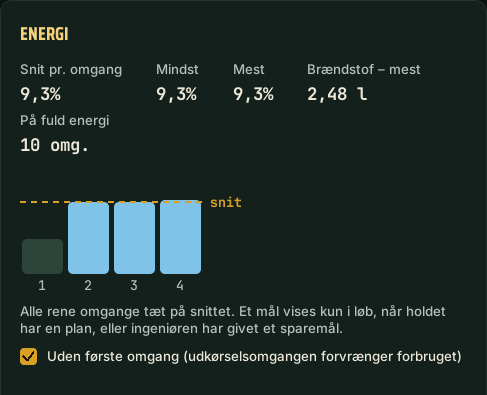
RETTELSETom bjælke under »Beskeder« ved første start af en ny version.
Version 0.4.4.6 (15.11.2026)
RETTELSEVinduet fryser ikke længere et øjeblik, mens der søges efter opdateringer ved start.
RETTELSEPitstop-kommandoer: »tryk foran, 2 ned« med komma, rettelse midt i sætningen (»nej, venstre«) og »tank halvt op«.
Version 0.4.4.5 (15.11.2026)
NYVindue: glatte, afrundede kanter på kort, knapper, mærker og kontakter.

NYStemme med følelse: gode nyheder (bedste omgang, vundet placering, podie) mere livlige, hastebeskeder hurtigere og højere.
RETTELSEVindue: fryser ikke længere et øjeblik, når ingeniøren starter.
RETTELSEKørselsrapport: de øvrige kort (dæk, energi, overskrifter, „Til næste stint“) tegnes også som ét element – rapporten er ca. 3 gange lettere.
Version 0.4.4.4 (15.11.2026)
RETTELSEVindue: hurtigere start – hjælpesiderne bygges først, når de åbnes første gang.
RETTELSEKørselsrapport: svingliste, „Forbedr i kørslen“ og felter tegnet som ét element – hurtigere rulning, valg af rapport og ændring af vinduesstørrelse.